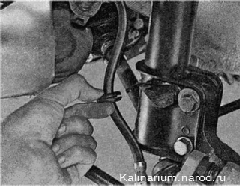
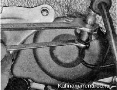
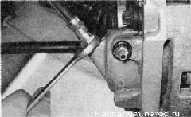

Передний тормозной шланг заменаПри каждом техническом обслуживании автомобиля визуально проверяем состояние тормозных шлангов. Шланги, имеющие потертости, вздутия, трещины или расслоения, заменяем немедленно. Тормозные шланги подлежат обязательной замене через 125 000 км пробега или через 5 лет эксплуатации. Для выполнения работы потребуются: специальный ключ для штуцеров тормозных трубок; — надежная подставка для автомобиля. Снятие 1. Подготавливаем автомобиль к выполнению работы. 2. Снимаем колесо. 3. Если автомобиль оборудован датчиками износа тормозных колодок, отсоединяем наконечник провода датчика от колодки жгута проводов. 4. Извлекаем тормозной шланг из кронштейна на стойке подвески. 5. Очищаем от грязи наконечники тормозного шланга и обрабатываем штуцер тормозной трубки проникающей смазкой. При выполнении следующей операции следите за тем, чтобы при отворачивании штуцера трубка не вращалась вместе с ним. Если трубка «закисла» в штуцере, замените ее. 6. Удерживая верхний наконечник тормозного шланга от проворачивания рожковым ключом па 15 мм, специальным ключом отворачиваем штуцер тормозной трубки. 7. Чтобы тормозная жидкость не вытекала из системы, надеваем на конец трубки защитный колпачок штуцера прокачки рабочего тормозного цилиндра. 8. Рожковым ключом на 15 мм отворачиваем нижний наконечник тормозного шланга. 
Соединение шланга с рабочим цилиндром уплотнено медным кольцом, которое не подлежит повторному использованию. Установка 1. Надеваем на нижний наконечник шланга новое уплотнительное кольцо, заворачиваем наконечник в отверстие корпуса тормозного цилиндра и затягиваем. 2. Заворачиваем штуцер тормозной трубки в верхний наконечник тормозного шланга и затягиваем его, не допуская перекручивания шланга. Отсутствие перекручивания тормозного шланга определяем по нанесенной на него цветной полоске. 3. Устанавливаем шланг в кронштейн стойки подвески. Прокачиваем тормозную систему и убеждаемся в герметичности соединений наконечников нового тормозного шланга. |